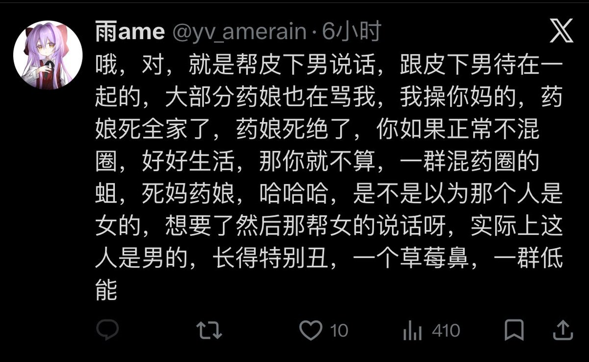

雨ame
@yv_amerain
@WinbornN94577 我没急啊，我就纯骂你啊，操你死妈死全家懂吗？就是纯恶俗逼啊，我就是纯恶俗逼，纯骂人，我好久没骂人了，现在想骂你这种不要脸的东西了，唉你妈逼给你妈砍成血雾，懂吗？给你老母喂狗，瓜条我也回应了，你为什么不回应这个呢，我都说了，要么现在两个人谁也别理谁，你一直在那里搞

屠荼徒堍兎
@WinbornN94577
那么急干嘛呢，骂你的我都不知道是谁呢那些天过去都没管过你那破事了还来跳，我又不是以tutu身份挂的你😋还有如果你只会容貌攻击，那你先来张高清无p照看看😉 https://t.co/kqrvzrqd8v